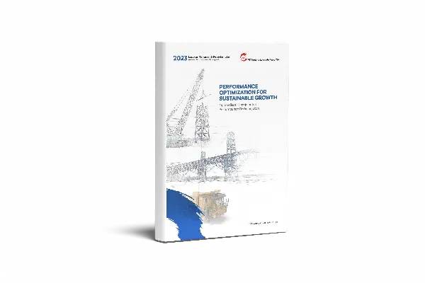

Pengumuman RUPSGMS announcement
Rencana penyelenggaraan dan mata acara.Meeting plan and agenda.
Konten draf.Draft content. Angka diambil dari laporan keuangan audit 2025. Bagian bertanda "Menyusul" menunggu data dan konfirmasi Sekretaris Perusahaan.Figures come from the audited 2025 financial statements. Items marked "To follow" await data and confirmation from the Corporate Secretary.
Hubungan InvestorInvestor Relations
Kinerja keuangan, laporan berkala, struktur kepemilikan, RUPS, dan aksi korporasi PKPK dalam satu halaman.PKPK's financial performance, periodic reports, ownership, general meetings, and corporate actions on one page.
Kode saham: PKPK · Bursa Efek IndonesiaTicker: PKPK · Indonesia Stock Exchange
01 / Ikhtisar keuanganFinancial highlights
Data konsolidasian dalam miliar rupiah, kecuali dinyatakan lain. Rasio dihitung dari laba tahun berjalan dan total ekuitas konsolidasian.Consolidated figures in billions of rupiah unless stated otherwise. Ratios use income for the year and total consolidated equity.
| PosItem | FY2025 | FY2024 |
|---|---|---|
| Laba rugiProfit or loss | ||
| PendapatanRevenue | 749,4749.4 | 244,8244.8 |
| Laba brutoGross profit | 216,3216.3 | 93,293.2 |
| Laba tahun berjalanIncome for the year | 55,755.7 | 15,915.9 |
| Laba diatribusikan ke pemilik entitas indukIncome attributable to owners of the parent | 38,638.6 | 6,66.6 |
| Total laba komprehensifTotal comprehensive income | 55,655.6 | 16,116.1 |
| Laba per saham (Rp penuh)Earnings per share (full Rp) | 32,1632.16 | 5,505.50 |
| Posisi keuanganFinancial position | ||
| Total asetTotal assets | 627,9627.9 | 604,8604.8 |
| Total liabilitasTotal liabilities | 316,2316.2 | 348,7348.7 |
| Total ekuitasTotal equity | 311,7311.7 | 256,2256.2 |
| RasioRatios | ||
| Marjin laba brutoGross margin | 28,9%28.9% | 38,1%38.1% |
| Marjin laba bersihNet margin | 7,4%7.4% | 6,5%6.5% |
| Imbal hasil aset (ROA)Return on assets (ROA) | 8,9%8.9% | 2,6%2.6% |
| Imbal hasil ekuitas (ROE)Return on equity (ROE) | 17,9%17.9% | 6,2%6.2% |
| Rasio lancarCurrent ratio | 0,37x0.37x | 0,50x0.50x |
| Liabilitas terhadap ekuitas (DER)Debt to equity (DER) | 1,01x1.01x | 1,36x1.36x |
| Liabilitas terhadap aset (DAR)Debt to assets (DAR) | 0,50x0.50x | 0,58x0.58x |
02 / LaporanReports
Laporan keuangan 2025 tersedia di sini. Arsip laporan tahunan dan laporan keuangan tengah tahunan berada di halaman laporan situs resmi.The 2025 financial statements are available here. Annual reports and interim financial statements are archived on the official reports page.




Laporan Tahunan 2025 dan laporan keuangan tengah tahunan 2026: menyusul.2025 Annual Report and 2026 interim financial statements: to follow.
04 / RUPSGeneral meetings
Setiap RUPS memuat enam jenis dokumen. Arsip yang sudah ada dapat dibuka di halaman RUPS situs resmi.Each meeting carries six document types. Existing archives open on the official GMS page.
Rencana penyelenggaraan dan mata acara.Meeting plan and agenda.
Undangan resmi kepada pemegang saham.Formal invitation to shareholders.
Dokumen pendukung setiap mata acara rapat.Supporting documents for each agenda item.
MenyusulTo followCalon anggota Direksi dan Dewan Komisaris.Candidates for the Board of Directors and Board of Commissioners.
MenyusulTo followHasil keputusan rapat. Arsip 2021 dan 2022 perlu dilengkapi.Meeting resolutions. The 2021 and 2022 archive needs completing.
Aturan penyelenggaraan dan pemungutan suara.Rules of conduct and voting.
MenyusulTo follow05 / Keterbukaan dan aksi korporasiDisclosures and corporate actions
Prospektus dan keterbukaan informasi lengkap tersedia di situs resmi.Prospectuses and the full disclosure archive are on the official site.
Pengendalian beralih kepada Resources Global Development Limited dan PT Deli Pratama Nusantara. Dokumen pengambilalihan dan penawaran tender (bila ada): menyusul.Control passed to Resources Global Development Limited and PT Deli Pratama Nusantara. Takeover and tender offer documents (if any): to follow.
PT Perdana Karya Perkasa Tbk menjadi PT Paragon Karya Perkasa Tbk.PT Perdana Karya Perkasa Tbk became PT Paragon Karya Perkasa Tbk.
Penambahan modal dengan hak memesan efek terlebih dahulu. Prospektus lengkap dan ringkas tersedia.Capital increase with pre-emptive rights. Full and summary prospectuses are available.
Penawaran 20,83% saham dan pencatatan di Bursa Efek Indonesia pada Juli 2007.Offering of 20.83% of shares and listing on the Indonesia Stock Exchange in July 2007.
Arsip resmi:Official archive: Keterbukaan informasi dan siaran persDisclosures and press releases · Prospektus (IPO 2007, PMHMETD I 2023)Prospectuses (2007 IPO, 2023 Rights Issue I) · Dokumen RUPSGMS documents
06 / Kontak investorInvestor contact